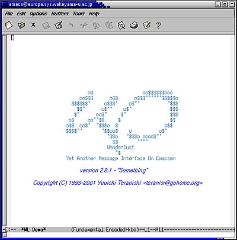
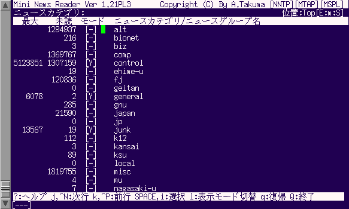

コンピュータ（とネットワーク）を使ってコンピュータの利用者の間でメッセージの交換、 すなわち手紙のやり取りを行うことができます。 これを電子メール（メール、Ｅメール、e-mail） と言います。
手紙を出すには宛名と住所を書かなければならないのと同じように、電子メールを送る時もメッセージの宛先を指定する必要があります。この宛先をメールアドレスと言います。
みなさんも既にシステム情報学センターの利用承認書に書かれているメールアドレスを持っています。実際には以下の２つのメールアドレスを使えます。どちらを使うかは、メールの読み書きをするソフトウェアの設定に依存します。ここでは、この講義の第２回の Netscape の初期設定において E mail Address として設定した システム工学部のメールアドレス を使います。
| 所属 | メールアドレス | メールサーバー |
|---|---|---|
| システム工学部のメールアドレス | ユーザ名@sys.wakayama-u.ac.jp | mail.sys.wakayama-u.ac.jp |
| システム情報学センターのメールアドレス | ユーザ名@center.wakayama-u.ac.jp | mail.center.wakayama-u.ac.jp |
メールアドレスの "@"（アットマーク)より右側の部分 （sys.wakayama-u.ac.jp のところ）をドメイン名と言います。 これは、まあ見て分かる通り、 "@" より左側にある “利用者” の “住所” に相当します。 jp:japan～日本の、ac:academic～学校関係の、wakayama-u～和歌山大学の、 sys～システム工学部、の誰々、という具合いですね。
ここのシステム（Linux 側）で使用できる電子メールを読み書きするためのソフトウェアには、以下のものがあります。
| mail/Mail | もっとも基本的なもの、コマンドで使用（使用できません） |
| mutt | mail/Mail と互換性のあるターミナル指向のもの |
| Netscape Mail | Netscape Communicator に含まれるもの、ウィンドウで使用 |
| MH | 複数のコマンドで構成された高機能なもの |
| RMAIL | emacs に組み込まれたもの |
| mh-e | MH を emacs の中から使用するためのユーザインタフェース |
| mew | MH と互換性があり emacs の中で使えるもの |
| Wanderlust | mew と互換性があり IMAP にちゃんと対応しているもの |
| sylpeed | X Window System (GTK) に対応したもの |
この授業ではから emacs の中から使用する Wanderlust を使います。Wanderlust は IMAP というプロトコル（手順）を使ってメッセージの管理を行う、emacs 上のソフトウェアです（実は POP も使えますし、ニュースリーダの機能もあります）。
それでは Wanderlust を使ってみましょう。emacs を起動し、M-x wl とタイプして改行してください。
| emacs の中から Wanderlust を起動 |
|---|
M-x wl[Enter] |

なお、emacs に "-f wl" というオプションを付ければ、emacs の起動と同時に wl を起動することができます。
| emacs の起動と同時に Wanderlust を起動 |
|---|
% emacs -f wl &[Enter] |
最初に Wanderlust を起動したときは、Wanderlust の動作に必要なメールフォルダやディレクトリの作成を行います。質問に y（またはスペース）を答えてください。
| 下書きフォルダの作成 |
|---|
| Draft Folder +draft does not exist, create it? (y or n) |
| 未送信フォルダの作成 |
| Queue Folder +queue does not exist, create it? (y or n) |
| ごみ箱フォルダの作成 |
| Trash Folder +trash does not exist, create it? (y or n) |
| 一時ディレクトリの作成 |
| Temp directory (to save multipart) ~/tmp/ does not exist, create it now? (y or n) |
書きかけのメールは下書きフォルダに保存されます。メールを送信すると、メールは下書きフォルダから未送信フォルダに移され、送信に成功すれば未送信フォルダから取り除かれます。削除したメールはごみ箱フォルダに入ります。作業用フォルダの作成に成功し、Wanderlust が正常に起動すると、次のような画面になります。
| File Edit Options Buffers Tools Folder Help |
[-]Desktop:0/0/0 |
| [--]-EEE:%%-F1 [ON] Wanderlust: Folder (Folder Encoded-kbd)--L1--All--- |
| Loading elmo-dop...done |
では手始めに、自分宛にメールを送ってみましょう。 w をタイプしてください。 するとバッファのウインドウが下のように変わります。
| File Edit Options Buffers Tools Headers Mail MIME-Edit Help |
| From: Wakayama Kentaro <s075000@sys.wakayama-u.ac.jp> To: Subject: User-Agent: Wanderlust/2.8.1 (Something) EMIKO/1.14.1 (Choanoflagellata) LIMIT/1.14.7 (Fujiidera) APEL/10.3 Emacs/21.1 (i586-kondara-linux-gnu) MULE/5.0 (SAKAKI) Fcc: +backup --text follows this line--- |
| [--]-EEE:%%-F1 [ON] Wanderlust: Folder (Folder Encoded-kbd)--L1--All--- |
| Type C-c C-x C-z to exit MIME mode, and type C-c C-x ? to get help. |
メールを送るには、 この To: の欄にあて先のメールアドレス、Subject: の欄にメッセージの見出しを書きます。 メールアドレスを ","（コンマ）で区切って複数書けば、同じメッセージを複数の人に送ることができます。 また、To: とは別に Cc: で始まる行を設けて、 そこにメールアドレスを書くこともできます （"Cc" は Carbon Copy の意味で、 “カーボン紙で複写したものを送る”という意味です）。
では、 自分宛にメールを送るために、
- To: の右側に
- 自分のユーザ名@sys.wakayama-u.ac.jp
- Subject: の右側に
- 自分宛のメール
と書いてください。 メールアドレスには空白を入れてはいけません。 ちょっと長いですが続けてタイプしてください。 そのあと、--text follows this line--- の下にカーソルを移動し、 メッセージの本文を書いてください。
| File Edit Options Buffers Tools Headers Mail MIME-Edit Help |
| From: Wakayama Kentaro <s075000@sys.wakayama-u.ac.jp> To: 自分のユーザ名@sys.wakayama-u.ac.jp Subject: 自分宛のメール User-Agent: Wanderlust/2.8.1 (Something) EMIKO/1.14.1 (Choanoflagellata) LIMIT/1.14.7 (Fujiidera) APEL/10.3 Emacs/21.1 (i586-kondara-linux-gnu) MULE/5.0 (SAKAKI) Fcc: +backup --text follows this line--- おげんきですかぁ？[Enter] [Enter] 自分の名前[Enter] |
| [--]-EEE:%%-F1 [ON] Wanderlust: Folder (Folder Encoded-kbd)--L1--All--- |
| Type C-c C-x C-z to exit MIME mode, and type C-c C-x ? to get help. |
自分のメールアドレスや見出しなどを書くときには、 それら以外の部分を変更しないように注意してください。 特に --text follows this line--- を変更すると、 メールが送れなくなる場合があります。 うっかり変更してしまった場合は、 元に戻せば大丈夫です。 その際には C-_ （[Ctrl] と [Shift] を押しながら _ アンダースコアをタイプ）を使うと便利です。
電子メールを書くときは、 電子メール特有の注意事項がいくつかあります。
ここまで書けたらメールを送信しましょう。 C-c C-c をタイプしてください。 ミニバッファに下のような表示があらわれたら、 y またはスペースをタイプしてください。 これで送信完了です （送信したくないときは n をタイプしてください）。
| メール送信の確認 |
|---|
| Do you really want to send current draft? (y or n) |
なお、最初にメールを送るときだけ、次に送信済フォルダの作成を行うメッセージが現れます。これにも y またはスペースをタイプしてください。
| 送信済フォルダの作成 |
|---|
| Folder +backup does not exist, create it? (y or n) |
では、次はあなた宛に届いたメールを読んでみましょう。 皆さん宛てのメールはこの授業の第２回でも触れたとおり、メールサーバの mail.sys.wakayama-u.ac.jp というマシンに届きます。Wanderlust ではメールサーバの設定は既に行われているので、その INBOX というフォルダを Wanderlust のメール受信フォルダとしで管理するようにします。
まず、カーソルを１行下に移動してください（# の位置）。
| File Edit Options Buffers Tools Folder Help |
[-]Desktop:0/0/0 # |
| [--]-EEE:%%-F1 [ON] Wanderlust: Folder (Folder Encoded-kbd)--L1--All--- |
| Sending...done |
次に m a とタイプするか、M-x wl-fldmgr-add とタイプして改行します。すると、追加するフォルダを聞いてきます。ここでは mail.sys.wakayama-u.ac.jp の INBOX (%inbox) というフォルダを追加するので、単に改行してください。何も指定せずに改行すると、(～) 内の設定が採用されます。
| フォルダの指定 |
|---|
| Folder name to add(%inbox): %[Enter] |
ここで上のようにフォルダ名を聞いてこずに Can't insert in the out of desktop group というメッセージが出たときは、カーソルを１行下に移動してから（# の位置）、もう一度 M-x wl-fldmgr-add とタイプして改行してください。
フォルダの追加に成功すると、追加したフォルダが Desktop の下に現れます。
| File Edit Options Buffers Tools Folder Help |
[-]Desktop:0/0/0 %inbox:*/*/* |
| [--]-EEE:%%-F1 [ON] Wanderlust: Folder (Folder Encoded-kbd)--L1--All--- |
| Sending...done |
このフォルダを開くには、ここでスペースをタイプします。するとパスワードを聞いてきます。ログインするときに使うパスワードを入力してください。
| パスワードの入力 |
|---|
| Password for IMAP:s075000/login@mail.sys.wakayama-u.ac.jp:143: |
パスワードが正しければ受信したメールのフォルダが開いて、届いたメールの一覧が表示されます。
| File Edit Options Buffers Tools Folder Help |
1 N05/22(水)07:50 [ Wakayama Kentaro ] 自分宛のメール |
| [--]-EEE:%%-F1 [ON] Wanderlust: Folder (Folder Encoded-kbd)--L1--All--- |
左から“メールの番号”、“日付”、“時間”、“差出人”、“見出し”が表示されます。 ここでスペースをタイプすると、 カーソル位置のメッセージの内容を表示します。
| File Edit Options Buffers Tools Folder Help |
1 05/22(水)07:50 [ Kohe Tokoi ] 自分宛のメール |
| -EEE:%%-F1 [ON] Wanderlust: %inbox@localhost {T}(0 new/0 unread) |
To: s075000@europa.sys.wakayama-u.ac.jp Subject: 自分宛のメール From: Kohe Tokoi <s075000@sys.wakayama-u.ac.jp> Delivered-To: s075000@sys.wakayama-u.ac.jp Date: Wed, 22 May 2002 07:50:41 +0900 Message-ID: <m3k7pxt8se.wl@mail.sys.wakayama-u.ac.jp> User-Agent: Wanderlust/2.8.1 (Something) EMIKO/1.14.1 (Choanoflagellata) LIMIT/1.14.7 (Fujiidera) APEL/10.3 Emacs/21.1 (i586-kondara-linux-gnu) MULE/5.0 (SAKAKI) MIME-Version: 1.0 (generated by EMIKO 1.14.1 - "Choanoflagellata") おげんきですかぁ？ 床井浩平 |
| -EEE:%%-F1 Wanderlust: << %inbox@localhost / 1 >> (MIME-View Encoded-kbd) |
スペースで次の画面、 [Backspace] で前の画面を表示します。 [Enter] だと１行ずつ先に進みます。メールを最後まで読み進むと、次のメールを表示します。すぐに他のメールを読むには、 n（次のメール）または p（前のメール）をタイプしてください。
| 送り返されてきたメールの再送 |
|---|
|
宛先を間違うとメールは送られません。 出したメールが、 宛先が間違いや何らかのトラブルであて先に届けられなかったときは、 MAILER-DAEMON からメールが送り返されてきます。 これはコンピュータが自動的に発送するメールなので、 このメールには返事を書かないでください。 送り返されてきたメールを送り返すには、そのメールを読んでいる状態で M-E（E は [Shift] を押しながら）あるいは M-x wl-summary-resend-bounced-mail を実行してください。 |
それでは、自分が出したメールに返事を書いてみましょう。 自分宛に出したメールを表示させて、 a をタイプしてください。
| File Edit Options Buffers Tools Folder Help |
1 05/22(水)07:50 [ Kohe Tokoi ] 自分宛のメール |
| -EEE:%%-F1 [ON] Wanderlust: %inbox@localhost {T}(0 new/0 unread) |
To: s075000@europa.sys.wakayama-u.ac.jp Subject: 自分宛のメール From: Kohe Tokoi <s075000@sys.wakayama-u.ac.jp> Delivered-To: s075000@sys.wakayama-u.ac.jp Date: Wed, 22 May 2002 07:50:41 +0900 Message-ID: <m3k7pxt8se.wl@mail.sys.wakayama-u.ac.jp> |
| -EEE:%%-F1 Wanderlust: << %inbox@localhost / 1 >> (MIME-View Encoded-kbd) |
(i586-kondara-linux-gnu) MULE/5.0 (SAKAKI) Fcc: +backup --text follows this line-- （ここに本文を書く） |
| -EEE:**-F1 [ON] Wanderlust: +draft/1 (Draft MIME-Edit 7bit Encoded-kbd) |
これで、メールの差出人に返事を書くことができます。試しに、自分宛てのメールに返事を書いて、送信してください。
- メールの引用
- ところで、返事には差出人のメッセージを引用した方が、 返事を受け取った人が「はて、何の話だったっけな？」と悩まずに済みます。 C-c C-y をタイプすれば、差出人のメッセージを ">" を付けて引用します （返事を書くときの a の代わりに A をタイプすると、最初から引用してくれます）。 なお、引用する場合は、相手のメッセージを全部引用せず、 必要部分以外は削除するようにしてください。
- 書きかけのメールの破棄
- 書きかけのメールを出さずに破棄するには、C-c C-k をタイプしてください。ミニバッファに"Kill Current Draft? (y or n)"と表示されたら、y またはスペースをタイプしてください。また、破棄せずに emacs を終了すると、書きかけのメールは下書きフォルダ (+draft) に残されます。
Wanderlust を最初に起動した時やメールの分類を行ったときには、メールのフォルダが作成されます。しかし、これらのフォルダはフォルダの一覧には表示されていません。メール受信フォルダ (%inbox) と同様に、これらをフォルダの一覧に追加するには、m a とタイプするか、M-x wl-fldmgr-add とタイプして改行します。フォルダ名を聞いてきたら、以下のようにフォルダを指定してください。
- 下書きフォルダを追加する
- "%" を削除して、フォルダ名に +draft を指定する。
- 未送信フォルダを追加する
- "%" を削除して、フォルダ名に +queue を指定する。
- 送信済フォルダを追加する
- "%" を削除して、フォルダ名に +backup を指定する。
- ごみ箱フォルダを追加する
- "%" を削除して、フォルダ名に +trash を指定する。
| 下書きフォルダを追加する |
|---|
| Folder name to add(%inbox): +draft[Enter] |
自分で作成したフォルダも、このようにしてフォルダ一覧に追加できます。この一覧におけるフォルダの表示名を変更するは、m p あるいは M-x wl-fldmgr-set-petnameをタイプしてください（フォルダ名自体が変更されるわけではありません）。
なお、+draft フォルダに保存されている書きかけのメールや、+backup に保存されている送信してしまったメールを表示して、E （[Shift] を押しながら E）をタイプすれば、それらをもう一度編集することができます。
Wanderlust を終了するには、フォルダの一覧モードで q をタイプしてください。 これは emacs の中で Wanderlust を終了する （元のバッファに戻る）だけなので、 必要ならこのあと C-x C-c で emacs を終了してください。
なお、最初に Wanderlust を使ったときや、フォルダの追加を行ったときには、終了時に次のような質問が出ます。y かスペースをタイプしてください。
| フォルダの設定の保存 |
|---|
|
Folder view was modified. Save current folders? (y or n) |
毎回メッセージに署名を書くのが面倒な人は、 署名を書いた .signature というファイルをホームディレクトリに置いてください。
| % emacs .signature[Enter] |
こうすると、emacs を使ってメールを書いているときに C-c C-w をタイプするだけで、 その署名をメッセージの最後に追加してくれます。
Wanderlust を使って tokoi@sys.wakayama-u.ac.jp 宛にメールを書け。
| キー操作 | |
|---|---|
| Wanderlust を起動する | M-x wl |
| メールの一覧を更新する（新着メールを表示する） | s |
| メールを読む | スペース |
| 次のメールを読む | n |
| 前のメールを読む | p |
| ほかのフォルダのメールを読む | g |
| メールに削除マークを付ける | d |
| メールを他のフォルダに移動 | o |
| メールの削除／移動マークを消す | u |
| メールの削除／移動を実行 | x |
| メールを書く | w |
| 返事を書く | a |
| 届いたメールを他の人に転送する | f |
| 引用して返事を書く | A |
| 引用する | C-c C-y |
| 書いたメールを送信する | C-c C-c |
| 書いたメールを破棄する | C-c C-k |
| Wanderlust を終了する | q |
電子メールが１対１ないし特定のグループへのメッセージの送信を行うのに対し、 ネットニュースは不特定多数の相手に対してメッセージを送ります。 ただし、この不特定多数というのはインターネットの利用者全員と言うわけではなく、 まあ「ある特定の分野に興味を持っている人たち」というところです。 ネットニュースの利用者は、 自分が興味を持つ特定の分野に関係するメッセージを集めた “ニュースグループ” を“購読”します。 そのニュースグループに送られたメッセージは “記事” と呼ばれます。また、ニュースグループに記事を送ることを、 “投稿する”と言います。
ニュースグループは対象とする話題や配布範囲などによって、 階層的に分類されています。 ニュースグループの「最上位の分類」のことを “トップカテゴリ”と呼び、 和歌山大学で購読しているトップカテゴリには以下のようなものがあります。
| トップカテゴリ | 内容 | 言語 | 配布範囲 |
|---|---|---|---|
| comp | コンピュータ関係 | 主に英語 | 全世界 |
| news | ネットニュース関連 | 主に英語 | 全世界 |
| talk | 語り合う場？ | 主に英語 | 全世界 |
| misc | そのほか | 主に英語 | 全世界 |
| rec | 趣味 | 主に英語 | 全世界 |
| soc | 社会問題 | 主に英語 | 全世界 |
| sci | 科学一般 | 主に英語 | 全世界 |
| fj | 日本の代表的 ニュースグループ |
主に日本語 | 一応全世界 |
| japan | 日本のもう一つの ニュースグループ |
主に日本語 | 日本？ |
| kansai | 関西の ニュースグループ |
主に日本語 | 関西？ |
| wakayama | 和歌山の ニュースグループ |
主に日本語 | 和歌山市内の一部 |
| wadai | 和歌山大学 | 主に日本語 | 和歌山大学ほか |
和歌山大学のニュースグループ (wadai) のように、 その機関内だけで運用されているものを“ローカルニュースグループ”と呼びます。その他のニュースグループは、複数の機関に配布されています（実は wadai も一部のほかの大学に送られています）。このように、トップカテゴリごとに配布範囲が異なります。このトップカテゴリの下に、 ニュースグループが話題別に分類されています。 たとえば、fj の下にはサブカテゴリとして rec があり、 その下に music というサブカテゴリがあります。 このニュースグループは fj.rec.music と表記され、 この中に記事が置かれています。 さらに、その下にもサブカテゴリがある場合があります。 たとえば fj.rec.music は一つのニュースグループですが、 fj.rec.music.progressive というニュースグループもあります。
ネットニュースを読むためのソフトウェアを ニュースリーダと呼びます。 このコンピュータにはニュースリーダもいくつかのものが用意されています。
| tin | コマンドで使うニュースリーダ、機能豊富 |
| mnews | コマンドで使うニュースリーダ、わかりやすい |
| Netscape News | Netscape Communicator に含まれるニュースリーダ、ウィンドウで使用 |
| GNUS, Gnus | emacs 系エディタに組み込まれたニュースリーダ |
それでは mnews を使ってみましょう。 “コンソール”か“UNIXシェル”で mnews を起動してください。
% mnews[Enter] |
mnews は端末ウィンドウ上で動くので、 mnews を起動したウィンドウに次のように表示されます。

C-n または j でカーソルが下に、 C-p または k でカーソルが上に動きます。 カーソルを目的のカテゴリのところに移動してスペースをタイプすれば、 そのカテゴリの中を見ることができます （記事の数が多いときは、 実際に読む記事の数～ソートする記事の数を聞いてきます）。 n をタイプすると、 現在カーソルのあるニュースグループより後ろの、 未読記事の残っているニュースグループに移動します。 p をタイプすると、 前方の未読記事の残っているニュースグループに移動します。 多分、すべてのニュースグループを読んでやろうと思う人はいないと思います。 読まないニュースグループのところで u をタイプすると、 次回ネットニュースを読むときには一覧に現れなくなります（購読中止）。 ニュースグループの一覧に購読していないニュースグループも表示させるには、 l をタイプします。 購読を中止したニュースグループを再び読むようにするには、 そのニュースグループで u をタイプしてください。 記事を読むのをやめたり、 上位のカテゴリに戻るには q をタイプします。 トップカテゴリの一覧で q をタイプすると、 mnews は終了します。 それでは、wadai.test というニュースグループの記事を読んでみましょう。 ここはニュースリーダの動作テストや投稿練習に使うニュースグループです。
| アナウンス用のニュースグループについて |
|---|
wadai の下のニュースグループのうち、 以下のものは時々重要な情報が流れますので、
定期的にチェックしてください。
|
それでは、 ここに記事を投稿してみましょう。 aをタイプしてみてください。 記事の題名（見出し）を聞いてくるので、 test とタイプしたあと [Enter] をタイプしてください。
| 題名(subject)を入力して下さい:test[Enter] |
次に配布範囲を聞いてきます。 この記事を和歌山大学以外に配布したくなければ local をタイプしますが、 今は空欄（[Enter]のみ）にしておいてください。
| 配布範囲(distribution)を入力して下さい:[Enter] |
記事を作成するために使用するテキストエディタを聞いてきます。 既に /usr/local/bin/mule が入っていると思うので、 そのまま [Enter] をタイプします （"-nw" オプション等が必要なら、ここに追加してください）。
| エディタ:/usr/local/bin/mule[Enter] |
mule が起動し、.message というファイルの作成します。 --text follows this line-- の下にカーソルを移動し、 そこから記事の本文を書いてください。 この行を変更しないよう、気をつけてください。
Newsgroups: wadai.test Distribution: Followup-To: Subject: test --text follows this line-- 投稿の練習です。[Enter] （近況報告か何か書いてください）[Enter] |
記事が書き終わったら、 C-x C-s でファイルを保存し、 C-x C-c で mule を終了してください。 作成した記事が画面に表示されるので、 一応スペースをタイプして一通り目を通してください。
| 記事を投稿してよろしいですか? [y/n/e(dit)/m(ime)]: |
このまま投稿するなら、ここで y をタイプしてください。 投稿しないで記事を破棄するなら n、 もう一度エディタを起動して修正するなら e をタイプしてください。 なお、wadai.test に投稿すると、 ニュースサーバが自動的に返事をメールで送ってきます。
ニュースサーバが送ってくれたメールのように、 記事の投稿者に対して電子メールで返事を送ることを、 記事に “リプライする” と言います。 それでは、自分の記事にリプライしてみましょう。 記事を投稿した直後は、 ニュースリーダーには自分の記事は現れないので、 一度 q をタイプしてニュースグループの選択画面に戻ったあと、 そこで g をタイプして新着記事をチェックしてください。 wadai.test の記事の数が１つ増えたことを確認したら、 もう一度 wadai.test に移って自分の記事を探してみましょう。 自分の記事が見つかったら、それを表示してみてください。 そこで r をタイプすると、 差出人宛にメールを書くために mule を起動します （起動するエディタを聞いてきますので、 ここでもそのまま [Enter] をタイプしてください）。 記事の内容を引用する場合は、 r の代わりに R をタイプしてください （不要な引用部分はできるだけ削りましょう）。 メールが書き終わったら、 ファイルを保存して mule を終了し、 記事の投稿と同じ手順でメールを送信してください。
投稿された記事に対して、 メールではなく記事の形で返事を書くことを、 記事に “フォローアップ（あるいは単にフォロー）する” と言います。また、そういう記事をフォロー記事またはフォローアップ記事と言います。 今読んでいる記事にフォローするには、 そこで f をタイプします。 記事の内容を引用するなら F をタイプします。 このあとの手順は記事の投稿と同じです。 引用する場合は、不要な部分を削ってください。 引用している部分の行数がほかの部分より多いと、 ニュースサーバは記事を受け付けてくれません。
記事を間違って投稿してしまったり、 投稿した記事の内容があとから読んだら不適切だった場合には、 投稿した記事を取り消す（キャンセル） することができます。 キャンセルしたい記事を表示させて、 C（[Shift] を押しながら C）をタイプしてください。 なお、他人の記事はキャンセルできません。 また、自分の記事でも他のコンピュータから投稿した記事もキャンセルできません。
電子メールは、メッセージを書いたテキストファイルを、 相手のところに“コピー”するためのメカニズムだと説明しましたが、 ネットニュースも、記事を 「世界中のニュースサーバというコンピュータにコピーする」 ためのメカニズムです。 このために、 記事を投稿してから他の機関のニュースサーバで読めるまでの間には、 若干（数時間から数日）の遅れが生じます。 また、小さな記事でもあっても、 その転送には世界中の膨大な数のコンピュータが関わります。 できるだけ無駄な記事の投稿は控え、 有意義な記事を投稿するようにしましょう。
記事はニュースサーバの間をどんどんコピーされて伝わっていきます。 それぞれのニュースサーバでは、一定期間その記事を保存したあと、 その記事を消します。 “キャンセルする”というのは、 実は他のニュースサーバにコピーされた記事を、 直ちに消去するよう依頼する “コントロールメッセージ”と呼ばれる特別な記事を投稿することで実現しています。 したがって、キャンセルしたからと言って、 世界中に配られてたその記事がすぐに消去されるわけではなく、 やはり若干の遅れが生じますし、確実にキャンセルできるとも限りません。 時には、キャンセルした記事でも他人の目に触れることがあるので、 注意してください。
| ネットニュースのマナーについて |
|---|
ネットニュースに投稿した記事は、 不特定多数の人の目に触れるわけですから、
その利用上のマナーについては、 電子メール以上に注意を払う必要があります。
|